Pincha una imagen para verla a tamaño real. Marca sí/no y pega el veredicto en el chat.
Wide abstract technical illustration on a background in the colour #06121c with a faint grid of tiny evenly spaced dots. In the right half, a straight horizontal line of soft light in #eaf4fa runs from the centre of the frame to the right edge. A side branch of light in #2BB3A3 leaves the main line, makes a large careful loop that fills the right half, and returns to the main line, passing through a bright glowing ring where it rejoins it. The branch and the ring glow strongly and cast a soft halo of #9FE3DA on the dark background. The left half of the frame is a plain, empty background in #06121c with only the faint grid. Style: clean minimal vector-like digital illustration, thin precise strokes, soft glow, flat dark background. Colours: #06121c, #2BB3A3, #9FE3DA, #eaf4fa. Mood: calm, careful, reliable. The image is completely textless.
Wide abstract technical illustration on a background of dark polished slate with a faint grid of tiny evenly spaced dots. In the right half, a straight horizontal line of soft frosted white light runs from the centre of the frame to the right edge. A side branch of light through teal sea glass leaves the main line, makes a large careful loop that fills the right half, and returns to the main line, passing through a bright glowing ring where it rejoins it. The branch and the ring glow strongly and cast a soft halo of pale aqua glass on the dark background. The left half of the frame is a plain, empty background of dark polished slate with only the faint grid. Style: clean minimal vector-like digital illustration, thin precise strokes, soft glow, flat dark background. Materials and light: dark polished slate, frosted white light, teal sea glass, pale aqua glass. Mood: calm, careful, reliable. The image is completely textless.
Wide abstract technical illustration on a deep midnight navy background with a faint grid of tiny evenly spaced dots. In the right half, a straight horizontal line of soft white light runs from the centre of the frame to the right edge. A side branch of teal light leaves the main line, makes a large careful loop that fills the right half, and returns to the main line, passing through a bright glowing ring where it rejoins it. The branch and the ring glow strongly and cast a soft teal halo on the dark background. The left half of the frame is a plain, empty dark background with only the faint grid. Style: clean minimal vector-like digital illustration, thin precise strokes, soft glow, flat dark background. Colours: deep midnight navy, teal, pale aqua, soft white. Mood: calm, careful, reliable. The image is completely textless.
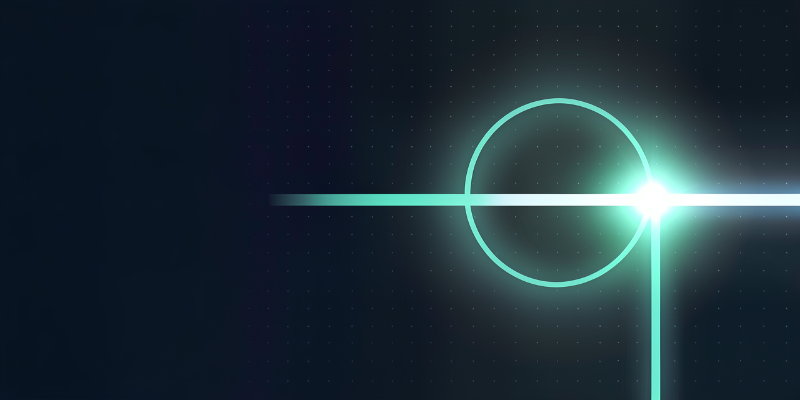
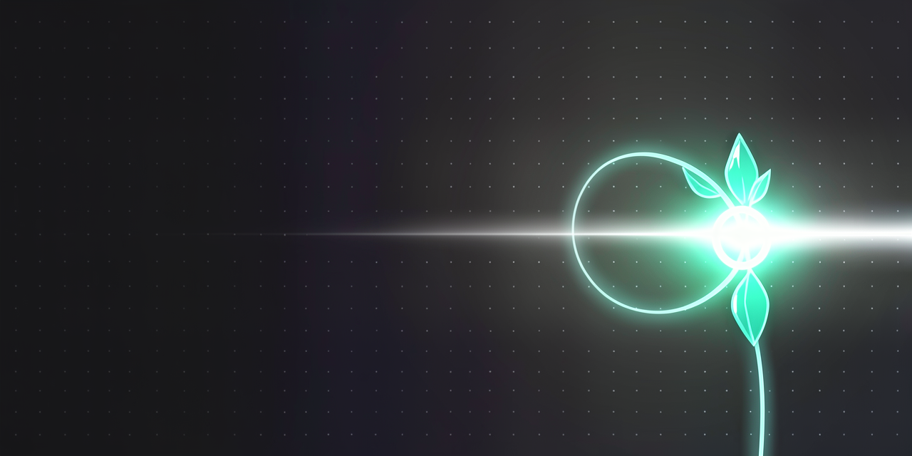
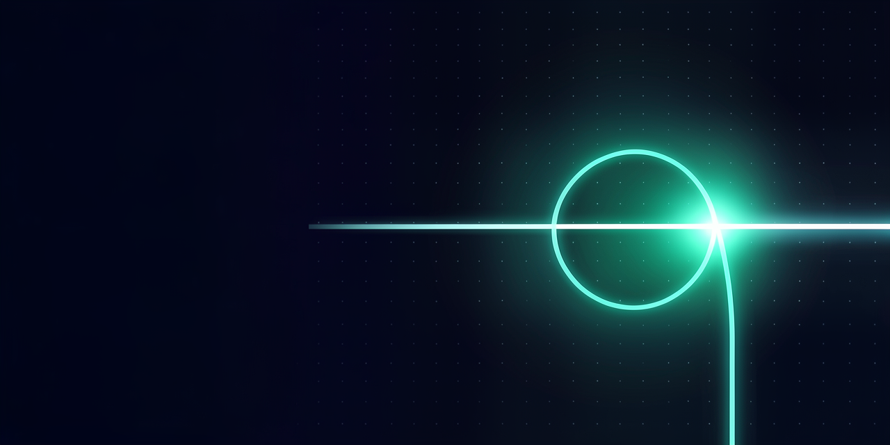
Wide abstract banner on a background in the colour #06121c with a faint grid of tiny evenly spaced dots. In the right half, a row of thin rectangular frames of clear glass floats in the dark, slightly overlapping and receding into depth, each holding a soft blurred glow in #A78BFA. One frame near the centre of the row shines brighter than the others with a clear light in the colour #8B5CF6 that spills softly onto its neighbours. The left half of the frame is a calm, smooth surface in #06121c, nearly empty and softly out of focus. Style: minimal elegant digital art, smooth gradients, soft volumetric light, crisp glass reflections. Colours: #06121c, #8B5CF6, #A78BFA and #ffffff highlights. Mood: calm, focused, quietly creative. The image is completely textless.
Wide abstract banner on a background of deep still water at night with a faint grid of tiny evenly spaced dots. In the right half, a row of thin rectangular frames of clear glass floats in the dark, slightly overlapping and receding into depth, each holding a soft blurred glow of frosted lavender glass. One frame near the centre of the row shines brighter than the others with the clear light of a lit amethyst that spills softly onto its neighbours. The left half of the frame is a calm, smooth surface of deep still water, nearly empty and softly out of focus. Style: minimal elegant digital art, smooth gradients, soft volumetric light, crisp glass reflections. Materials and light: deep still water at night, clear glass, lit amethyst, frosted lavender glass, cool white highlights. Mood: calm, focused, quietly creative. The image is completely textless.
Wide abstract banner on a deep midnight navy background with a faint grid of tiny evenly spaced dots. In the right half, a row of thin rectangular frames of clear glass floats in the dark, slightly overlapping and receding into depth, each holding a soft blurred glow. One frame near the centre of the row shines brighter than the others with a clear violet light that spills softly onto its neighbours. The left half of the frame is a calm, smooth, dark navy surface, nearly empty and softly out of focus. Style: minimal elegant digital art, smooth gradients, soft volumetric light, crisp glass reflections. Colours: deep midnight navy, violet, soft lavender and white highlights. Mood: calm, focused, quietly creative. The image is completely textless.
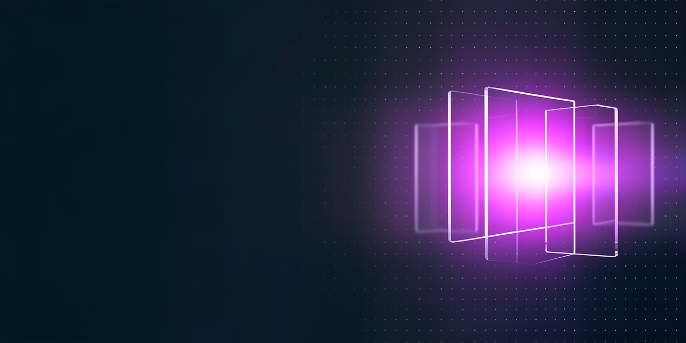
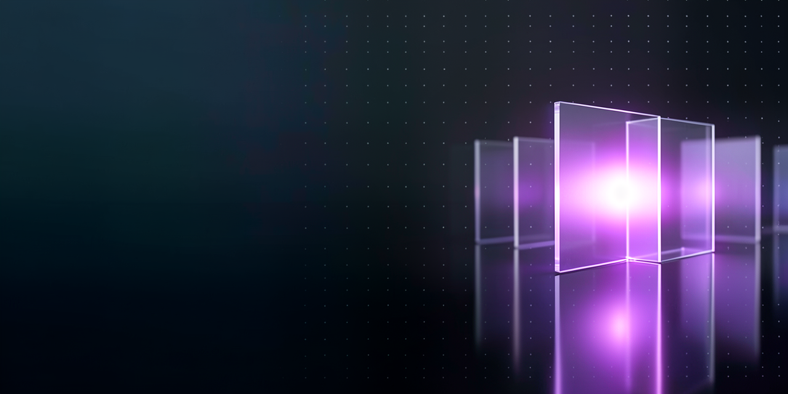
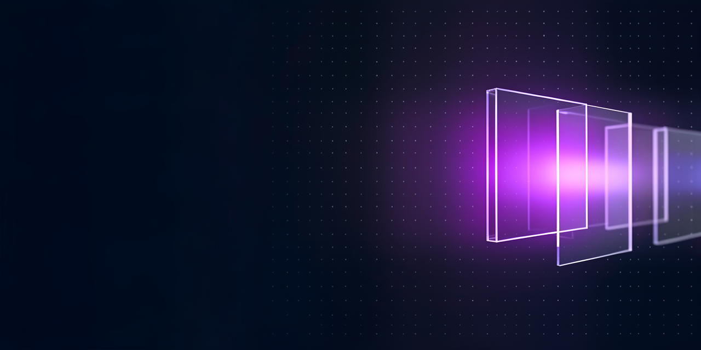
Wide abstract banner on a background in the colour #06121c with a faint grid of tiny evenly spaced dots. In the right half, a single smooth sound-wave ribbon of light flows in from the centre and curls into a pattern of fine glowing concentric rings made of thin threads of light in #F6B1CA. The ribbon glows in #D9467A with soft highlights in #ffffff along its crests. The left half of the frame is a calm, smooth surface in #06121c, nearly empty and softly out of focus. Style: minimal elegant digital art, thin precise luminous lines, soft glow, smooth gradients. Colours: #06121c, #D9467A, #F6B1CA and #ffffff highlights. Mood: calm, warm, attentive. The image is completely textless.
Wide abstract banner on a background of dark blue velvet at night with a faint grid of tiny evenly spaced dots. In the right half, a single smooth sound-wave ribbon of light flows in from the centre and curls into a pattern of fine glowing concentric rings made of thin threads of light through rose quartz. The ribbon glows with the warm light of raspberry glass and soft white highlights along its crests. The left half of the frame is a calm, smooth surface of dark blue velvet, nearly empty and softly out of focus. Style: minimal elegant digital art, thin precise luminous lines, soft glow, smooth gradients. Materials and light: dark blue velvet, lit raspberry glass, rose quartz, cool white highlights. Mood: calm, warm, attentive. The image is completely textless.
Wide abstract banner on a deep midnight navy background with a faint grid of tiny evenly spaced dots. In the right half, a single smooth sound-wave ribbon of light flows in from the centre and curls into a pattern of fine glowing concentric rings made of thin threads of light. The ribbon glows in a warm raspberry pink with soft white highlights along its crests. The left half of the frame is a calm, smooth, dark navy surface, nearly empty and softly out of focus. Style: minimal elegant digital art, thin precise luminous lines, soft glow, smooth gradients. Colours: deep midnight navy, raspberry pink, soft rose and white highlights. Mood: calm, warm, attentive. The image is completely textless.
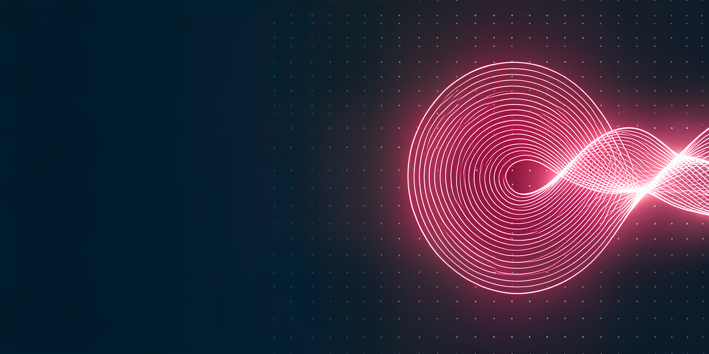
Wide abstract technical illustration on a background in the colour #0d1b2a with a faint fine grid. In the right half, several thin glowing lines of light run from the centre of the frame to the right edge, splitting apart and merging again, each joint marked by a small round node. A short bright dash of light travels from the end of one line into the start of the next one at a bright meeting node. The lines glow in #38b6e8, with a few nodes in #f2b34a and #4cc38a. The left half of the frame is a plain, empty background in #0d1b2a with only the faint grid. Style: clean minimal vector-like digital illustration, thin precise strokes, soft glow, flat dark background. Colours: #0d1b2a, #38b6e8, #f2b34a, #4cc38a, #eef6fb. Mood: calm, precise, trustworthy. The image is completely textless.
Wide abstract technical illustration on a background of dark blue slate with a faint fine grid. In the right half, several thin glowing lines of light run from the centre of the frame to the right edge, splitting apart and merging again, each joint marked by a small round node. A short bright dash of light travels from the end of one line into the start of the next one at a bright meeting node. The lines glow with the cool light of clear blue glass, with a few nodes of warm polished brass and pale jade. The left half of the frame is a plain, empty background of dark blue slate with only the faint grid. Style: clean minimal vector-like digital illustration, thin precise strokes, soft glow, flat dark background. Materials and light: dark blue slate, clear blue glass light, warm polished brass, pale jade, soft white light. Mood: calm, precise, trustworthy. The image is completely textless.
Wide abstract technical illustration on a deep dark navy background with a faint fine grid. In the right half, several thin glowing lines of light run from the centre of the frame to the right edge, splitting apart and merging again, each joint marked by a small round node. A short bright dash of light travels from the end of one line into the start of the next one at a bright meeting node. The lines glow in sky blue, with a few nodes in warm amber and soft green. The left half of the frame is a plain, empty dark background with only the faint grid. Style: clean minimal vector-like digital illustration, thin precise strokes, soft glow, flat dark background. Colours: deep navy, sky blue, amber, soft green, off-white. Mood: calm, precise, trustworthy. The image is completely textless.
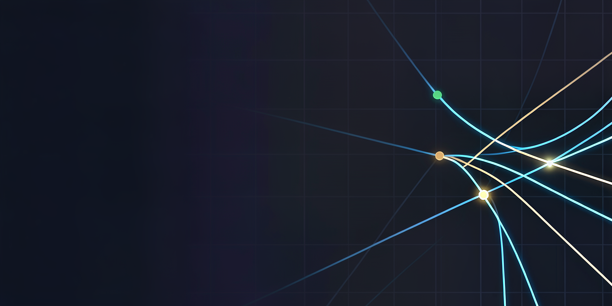
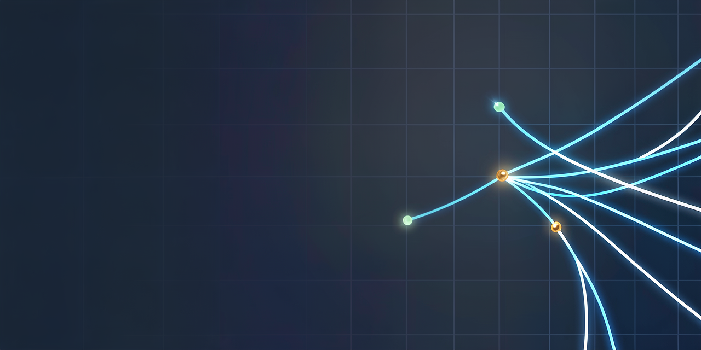
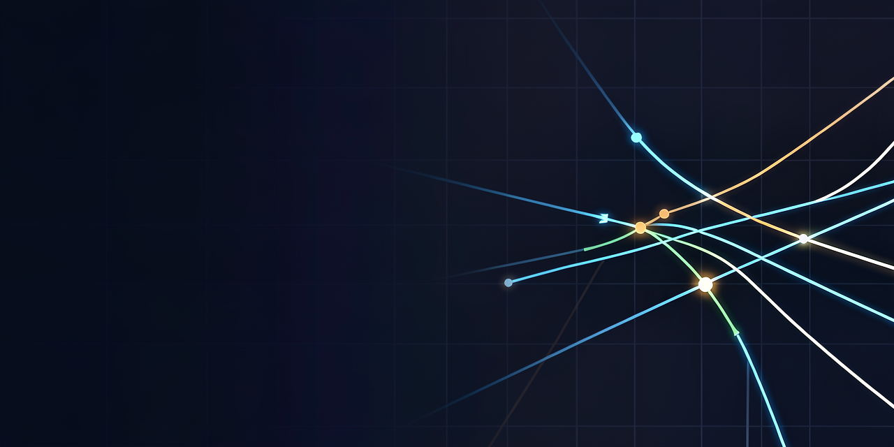
Wide abstract banner on a background in the colour #06121c. In the right half, a tall open threshold with softly rounded corners stands in the dark, and clear light in the colour #1aa6df pours out through it, spreading across a smooth floor in the colour #06121c in gentle soft ripples and rising into a soft radial glow of #5cc8f2. Three small soft points of light hover just inside the threshold: one in #E0703A, one in #2F7A55 and one in #3D6FD9. A faint grid of tiny evenly spaced dots covers the whole background and fades softly into the darkness. The left half of the frame is a calm, smooth surface in #06121c, nearly empty and softly out of focus. Style: minimal elegant digital art, smooth gradients, soft volumetric light, crisp and clean. Colours: #06121c, #1aa6df, #5cc8f2 and #ffffff highlights. Mood: calm, honest, quietly ambitious. The image is completely textless.
Wide abstract banner on a background of dark polished slate at night. In the right half, a tall open threshold with softly rounded corners stands in the dark, and the clear light of blue daylight through thick glass pours out through it, spreading across a smooth floor of dark slate in gentle soft ripples and rising into a soft radial glow. Three small soft points of light hover just inside the threshold: one of warm glowing clay, one of deep green glass and one of blue enamel. A faint grid of tiny evenly spaced dots covers the whole background and fades softly into the darkness. The left half of the frame is a calm, smooth surface of dark slate, nearly empty and softly out of focus. Style: minimal elegant digital art, smooth gradients, soft volumetric light, crisp and clean. Materials and light: dark polished slate, blue daylight through thick glass, cool white light. Mood: calm, honest, quietly ambitious. The image is completely textless.
Wide abstract banner on a deep midnight navy background. In the right half, a tall open threshold with softly rounded corners stands in the dark, and clear sky-blue light pours out through it, spreading across a smooth dark floor in gentle soft ripples and rising into a soft radial glow. Three small soft points of light hover just inside the threshold: one warm orange, one deep forest green and one royal blue. A faint grid of tiny evenly spaced dots covers the whole background and fades softly into the darkness. The left half of the frame is a calm, smooth, dark navy surface, nearly empty and softly out of focus. Style: minimal elegant digital art, smooth gradients, soft volumetric light, crisp and clean. Colours: deep midnight navy, sky blue, cyan and white highlights. Mood: calm, honest, quietly ambitious. The image is completely textless.
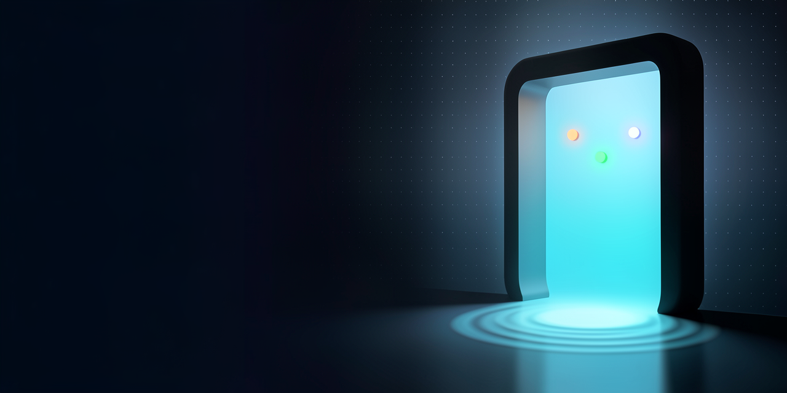
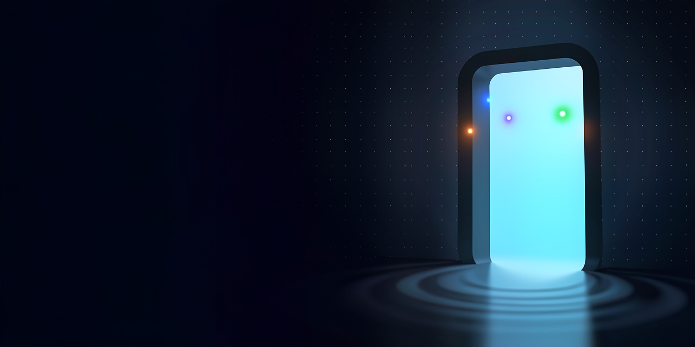
Cinematic landscape photograph of a wild fantasy plain at first light, grounded and natural, with muted colours and a single warm accent. The left third of the frame is a calm, open stretch of plain under soft morning haze in the colour #8a9aa8, flat and quiet. In the right two thirds, a cluster of tall slender needles of rock in the colour #221c16 rises from low ridges of sand in #332415, each needle leaning slightly, their tips catching the first low sun in #E0703A while their bases stay in cool shadow. A thin thread of smoke rises far away between the needles, and a small weathered banner of rough cloth hangs from a wooden pole on the nearest ridge. The sky is a pale washed #f1e4d0 with a soft band of haze near the horizon. Style: cinematic landscape photograph, natural muted colours, subtle filmic grade, fine detail. Colours: #E0703A, #221c16, #f1e4d0, #8a9aa8. Mood: wild, quiet, lived-in. The image is completely textless.
Cinematic landscape photograph of a wild fantasy plain at first light, grounded and natural, with muted colours and a single warm accent. The left third of the frame is a calm, open stretch of plain under soft morning haze of cool grey, flat and quiet. In the right two thirds, a cluster of tall slender needles of black forged iron rock rises from low ridges of dark wet sand, each needle leaning slightly, their tips catching the first low sun with the warm glow of fired clay while their bases stay in cool shadow. A thin thread of smoke rises far away between the needles, and a small weathered banner of rough cloth hangs from a wooden pole on the nearest ridge. The sky is the pale colour of sun-bleached bone with a soft band of haze near the horizon. Style: cinematic landscape photograph, natural muted colours, subtle filmic grade, fine detail. Materials and light: fired clay in low sunlight, black forged iron, sun-bleached bone, cool grey haze. Mood: wild, quiet, lived-in. The image is completely textless.
Cinematic landscape photograph of a wild fantasy plain at first light, grounded and natural, with muted colours and a single warm accent. The left third of the frame is a calm, open stretch of plain under soft morning haze, flat and quiet. In the right two thirds, a cluster of tall slender needles of dark iron-grey rock rises from low ridges of dark sand, each needle leaning slightly, their tips catching the first low sun in a dusty clay orange while their bases stay in cool shadow. A thin thread of smoke rises far away between the needles, and a small weathered banner of rough cloth hangs from a wooden pole on the nearest ridge. The sky is a pale washed bone colour with a soft band of haze near the horizon. Style: cinematic landscape photograph, natural muted colours, subtle filmic grade, fine detail. Colours: dusty clay orange, dark iron grey, warm bone, pale haze. Mood: wild, quiet, lived-in. The image is completely textless.
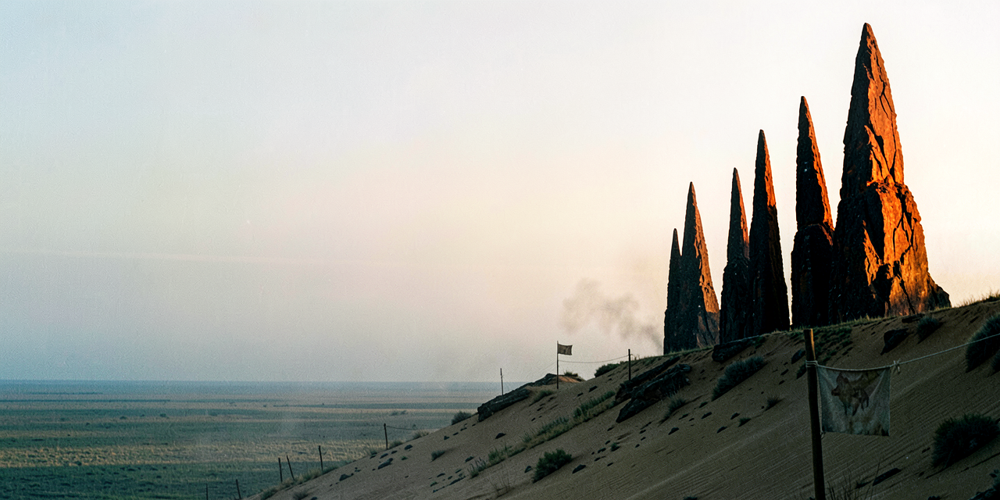
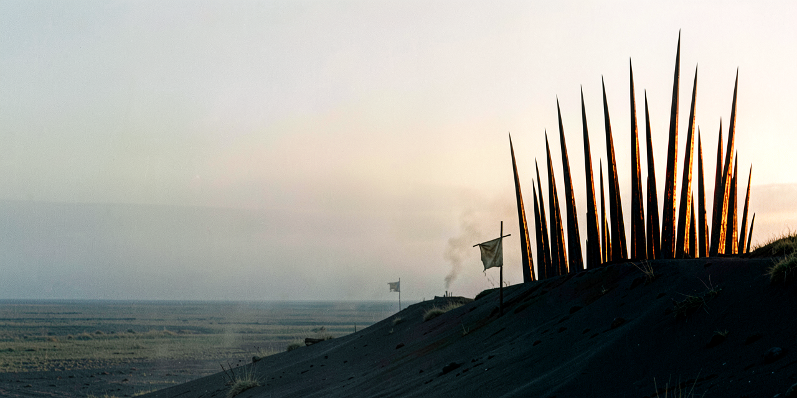
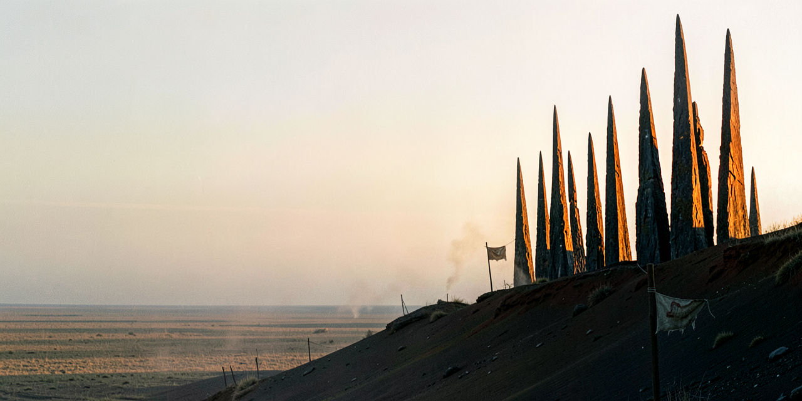
Wide abstract conceptual artwork on textured paper in the colour #F7F5F2. Two watercolour inks meet across the frame and keep their own colour where they touch: an ink in the colour #9B2335 flows in from the lower left and an ink in the colour #2D6A4F flows in from the lower right. Where they meet in the centre, a wide band of fine intermediate veins appears in #B5832A and muted transitional tones between the two inks, with organic pigment texture soaking into the paper fibres. The central band is the protagonist: wide, rich in nuance, between #9B2335 and #2D6A4F. The upper third of the frame is calm, bare paper in #F7F5F2 with a soft natural grain. Flat even light and a printed fine art finish. Style: editorial watercolour on paper, delicate and contemplative, soft muted colours. Colours: #F7F5F2, #9B2335, #2D6A4F, #B5832A. Mood: serene, thoughtful, balanced. The image is completely textless.
Wide abstract conceptual artwork on warm unbleached cotton paper. Two watercolour inks meet across the frame and keep their own colour where they touch: an ink of dried oxblood flows in from the lower left and an ink of deep moss in shade flows in from the lower right. Where they meet in the centre, a wide band of fine intermediate veins appears in warm resin amber and dusty earth tones, with organic pigment texture soaking into the paper fibres. The central band is the protagonist: wide, rich in nuance, between the oxblood and the moss. The upper third of the frame is calm, bare unbleached cotton paper with a soft natural grain. Flat even daylight and a printed fine art finish. Style: editorial watercolour on paper, delicate and contemplative, soft muted colours. Materials and light: unbleached cotton paper, dried oxblood ink, shaded moss green ink, warm resin amber, flat daylight. Mood: serene, thoughtful, balanced. The image is completely textless.
Wide abstract conceptual artwork on warm beige textured paper. Two watercolour inks meet across the frame and keep their own colour where they touch: a deep burgundy ink flows in from the lower left and a deep forest-green ink flows in from the lower right. Where they meet in the centre, a wide band of fine intermediate veins appears in amber and muted earthy transitional tones, with organic pigment texture soaking into the paper fibres. The central band is the protagonist: wide, rich in nuance, between the burgundy and the green. The upper third of the frame is calm, warm, bare beige paper with a soft natural grain. Flat even light and a printed fine art finish. Style: editorial watercolour on paper, delicate and contemplative, soft muted colours. Colours: warm beige paper, deep burgundy, oxblood, forest green, amber. Mood: serene, thoughtful, balanced. The image is completely textless.
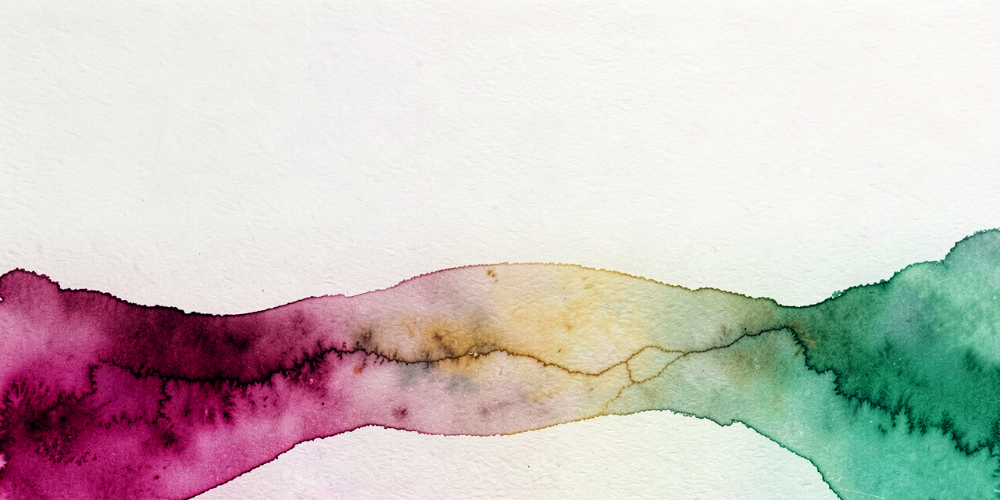
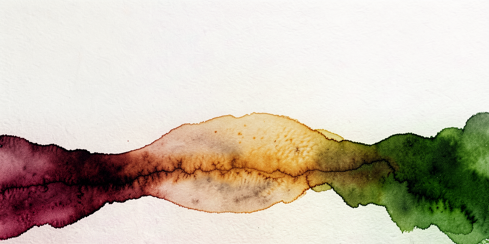
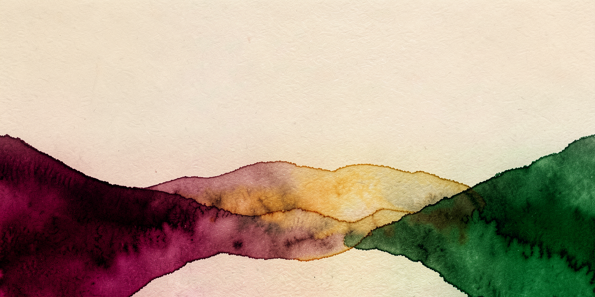